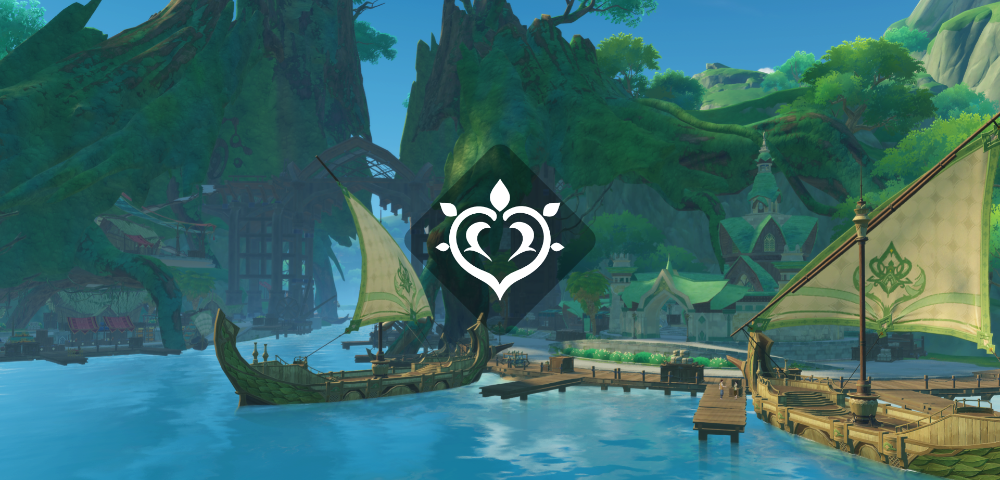
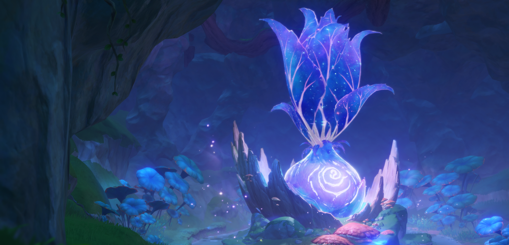
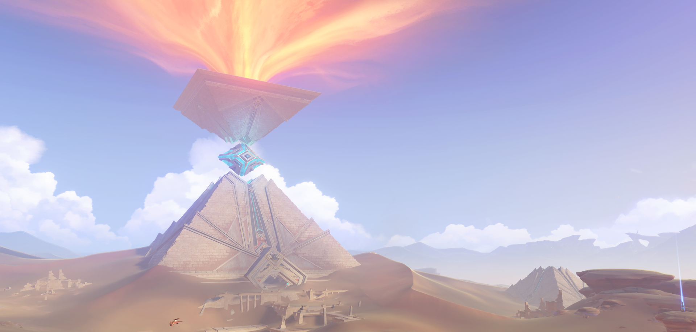

SUMERU
- Země moudrosti -

Město učenců se nachází v západo-centrální části Teyvatu.
Fantastický národ bujného deštného pralesa a pusté pouště, kde roste a je pohřben nespočet plodů moudrosti. Ať už cestovatelé cestují z dálky lesem, aby se dostali do akademického města, nebo se ponoří hluboko do pouště, aby objevili historické ruiny Rudé pouště, zde na ně čeká množství cenných znalostí.
Sumeru je jednou ze sedmi oblastí Teyvatu. Je to národ, který uctívá Nižšího Lorda Kusanali, boha přírody a moudrosti. Je známé jako centrum učení Teyvatu, nachází se zde Sumerská Akademie.

Bohyně květin, král Deshret a Vyšší lord Rukkhadevata – společně známí jako tři bohožští králové Sumeru – staví Ay-Khanoum, „Město amfiteátrů“. Jeho jméno znamená „Město měsíční panny“ ve starověkém jazyce Džinů.
Říká se, že bohyně květin má „přátelský vztah“ s Džiny.
Podle některých legend král Deshret zajal Džiny v magických lahvích označených jeho pečetí, ačkoliv byli také jeho ochotní služebníci při dobývání světa. Vytvořil Ay-Khanoum jako město pro Džiny, zatímco oni vytvořili vchod do mauzolea krále Deshreta.
Bohyně květin umírá „kvůli zlobě žhnoucího slunce a žlutého písku“ a město Ay-Khanoum je zničeno.
Bohyně květin toužila po "velkolepé smrti", aby hořkost její smrti zachovala její odkaz navždy. Král Deshret, který byl do ní zamilovaný, si to nikdy neuvědomil.
Po smrti bohyně květin se král Deshret a Vyšší lord Rukkhadevata rozešli, aby vytvořili své vlastní civilizace.